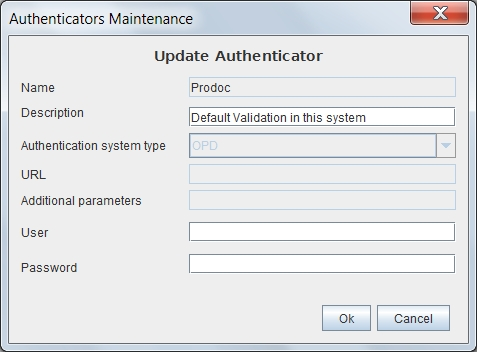

Authentication Systems Maintenance
When selected in the form Authentication Systems List one of the options to add, delete, modify or copy the Authentication System will appear this form with different fields on or off.
This form contains the information:
- Authentication System Name: Authentication system identifier whose value can not be repeated or changed once assigned. You can have a maximum length of 32 characters. (Eg "Corporate_LDAP")
- Authentication System Description: escription for understanding the authentication system. You can have a maximum length of 128 characters. (Eg "LDAP Delegation Brazil")
- Type of Authentication System: Indicates the type of authentication system. You can implement new types if needed. Currently available are:
- OPD: OpenProdoc. In this mode, both the user and the password (encrypted) is stored along with the rest of the OPD data. Entered password is verified against the data stored in OPD.
- DDBB: Data Base. This form of authentication makes a connection to the database defined in url and entered the username and password to connect. If the DB accepts the connection, OPD recognized as authenticated the user.
- LDAP: The user is checked against the LDAP indicated in the url. If authentication against LDAP is correct, OPD recognized as authenticated the user.
- OS: Operative System. This form should only be used to boot server processes or for use in environments with highly controlled PCs. OPD recognizes as a valid user if your login name matches the current operating system user without checking the key.
- URL o reference to Authentication System:The URI or URL reference to the authentication system. It is necessary to LDAP and DB.
- Additional Parameters (specific for some types): In the case of DB is the jdbc driver ,in the case of LDAP is a parameter that could be used in a function call such as: "env.put(Context.SECURITY_PRINCIPAL,"cn = "+User+" "+getParam())".
- Connection user to Authentication System: User need to connect to the system. Not currently used.
- Connection password to Authentication System : password required to connect to the system. Not currently used.

Ver: Authentication Systems List
Help Index OpenProdoc